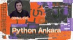
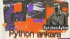
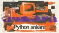
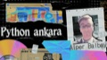
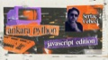
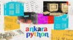
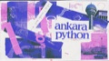

Son Etkinlik
#13 · Community EditionGeçmiş Etkinlikler
11 Buluşma
Büyük Veri, Mimarilerin Evrimi ve Modern Pratikler
#12 · CoZone, ODTÜ Teknokent
12Şub2026

LLM ve Coding Agent Devrimi
#11 · CoZone, ODTÜ Teknokent
15Oca2026
Flask, FastAPI nasıl çalışır?
#10 · CoZone, ODTÜ Teknokent
11Ara2025

Python 3.14'te Neler Yeni?
#9 · CoZone, ODTÜ Teknokent
13Kas2025

Voice Agents, Generative Modeller ve LiveKit
#8 · CoZone, ODTÜ Teknokent
16Eki2025

JavaScript, Python ve biraz derinlerine giriş
#7 · CoZone, ODTÜ Teknokent
25Eyl2025

Type Hints, MyPy ve Typing Ekosistemi
#6 · CoZone, ODTÜ Teknokent
04Eyl2025

Python Packaging ve PyPI
#5 · CoZone, ODTÜ Teknokent
14Ağu2025
Notebooks, Jupyter ve Marimo
#4 · Walker's Tunalı
17Tem2025
Coding Agents
Online #2 · Zoom
01Tem2025
Python Talks #3
#3 · Walker's Tunalı
29May2025